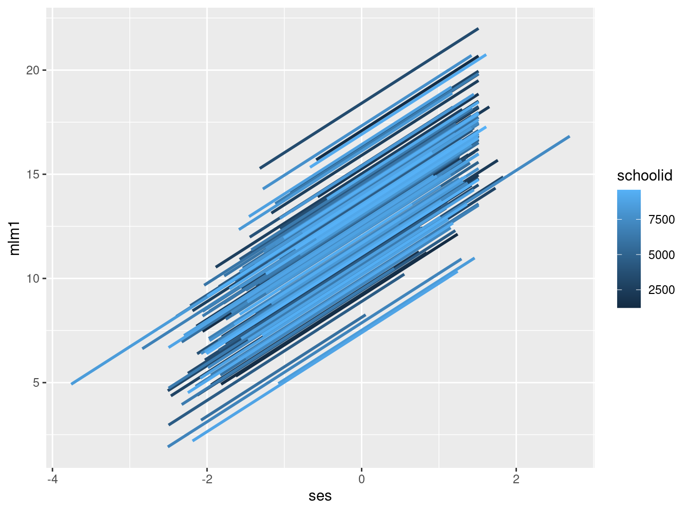
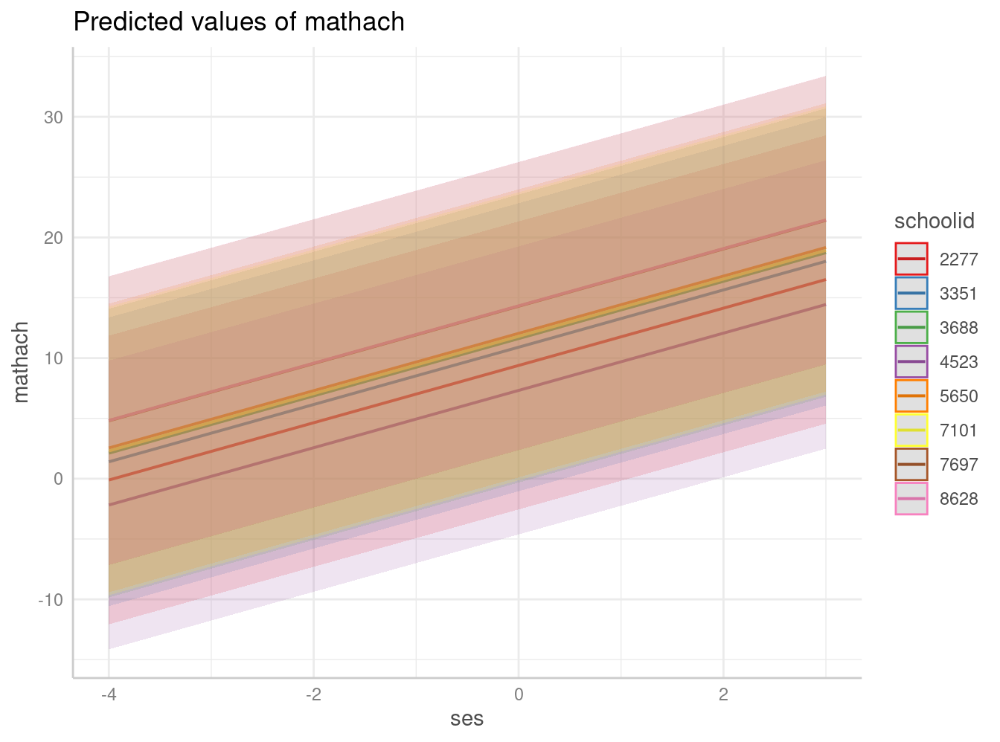
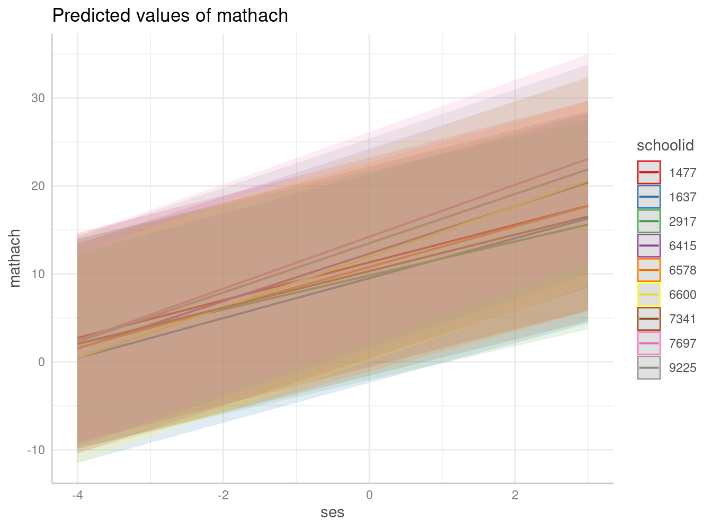

pacman::p_load(lme4,foreign, stargazer, texreg, lattice, sjPlot, dplyr, ggplot2, ggeffects) # paquetes a cargarPredicción de efectos aleatorios
Correspondiente a la sesión del viernes, 29 de septiembre de 2023
1 Cargar/instalar librerías
2 Leer datos base High School and Beyond (HSB)
Como en sesión anterior
mlm = read.dta("http://www.stata-press.com/data/mlmus3/hsb.dta")
dim(mlm)
names(mlm)
attach(mlm)
#Agregacion de casos a escuelas
agg_mlm=mlm %>% group_by(schoolid) %>% summarise_all(funs(mean))3 Coeficientes aleatorios
Estos coeficientes se asocian a la posibilidad de estimar variabilidad de intercepto y de pendiente(s) a través de las unidades de nivel 2. Volviendo a la estimación de un modelo con intercepto y pendiente aleatoria:
\(y_{ij}=\gamma_{00}+\gamma_{10}X_{ij}+\mu_{0j}+\mu_{1j}X_{ij}+ r_{ij}\)
reg_mlm0=lmer(mathach ~ 1 + ( 1 | schoolid), data = mlm)
reg_mlm1=lmer(mathach ~ 1 + ses + sector +( 1 | schoolid), data = mlm)
reg_mlm2 = lmer(mathach ~ 1 + ses + (1 +ses | schoolid), data=mlm)
htmlreg(reg_mlm2, doctype = FALSE)| Model 1 | |
|---|---|
| (Intercept) | 12.67*** |
| (0.19) | |
| ses | 2.39*** |
| (0.12) | |
| AIC | 46652.40 |
| BIC | 46693.68 |
| Log Likelihood | -23320.20 |
| Num. obs. | 7185 |
| Num. groups: schoolid | 160 |
| Var: schoolid (Intercept) | 4.83 |
| Var: schoolid ses | 0.41 |
| Cov: schoolid (Intercept) ses | -0.15 |
| Var: Residual | 36.83 |
| ***p < 0.001; **p < 0.01; *p < 0.05 | |
En este modelo vemos la estimación de efectos fijos y aleatorios: fijo para intercepto y pendiente, y aleatorios para intercepto y pendiente. Para poder ver el resultado de la estimación, se puede realizar la predicción de los efectos aleatorios y gráficos.
4 Empirical bayes / posterior means para null model
\(\hat{\beta}^{EB}_{0j}=\gamma_j\hat{\beta}_{0j}+(1-\gamma_j)\hat{\gamma}_{00}\)
Donde:
-\(\hat{\beta}^{EB}_{0j}\): estimador empirical bayes del intercepto para el grupo \(j\) -\(\gamma_j\) es un ponderador que se define como la confiabilidad del promedio del grupo, y que equivale a
\(\gamma_j=\frac{\tau_{00}}{\tau_{00}+\sigma^2/n_j}\)
-\(\hat{\beta}_{0j}\): es el promedio del grupo -\(\hat{\gamma}_{00}\): gran promedio (efecto fijo intercepto)
Entonces, primero seleccionamos una escuela como ejemplo (id 1477)
attach(mlm)
mlm %>% group_by(schoolid) %>% summarise(mean(mathach),count=n()) %>% slice(1:20)
mlm %>% group_by(schoolid) %>% summarise(mean(mathach),count=n()) %>% filter(schoolid==1477)
id1477<- mlm[ which(mlm$schoolid==1477), ] # subset datos para id 1477
id1477
dim(id1477)\(\gamma_j\)
varcomp=as.data.frame(VarCorr(reg_mlm0)) # entrega matriz componentes varianza como base de datos
#recordar reg_mlm0 es la estimación de arriba del modelo nulo
tau00=varcomp[1,4]
sigma2=varcomp[2,4]
gama_j=tau00/(tau00+(sigma2/62)) # 62 es el N de la escuela 1477\(\hat{\beta}_{0j}\)
mean_j= mlm %>% filter(schoolid==1477) %>% summarise(mean(mathach))
mean_j mean(mathach)
1 14.22847\(\hat{\gamma}_{00}\)
gama_00= reg_mlm0@beta # beta es el nombre del estimador gama00 en el objeto
gama_00[1] 12.63697Estimación media posterior intercepto para id 1477
int_eb=gama_j*(mean_j)+((1-gama_j)*(reg_mlm0@beta))Comparaciones (ver “shrinkage effect”)
int_eb mean(mathach)
1 14.11978mean_j mean(mathach)
1 14.22847mean(mathach)[1] 12.74785Contrastar shrinkage para N más pequeño
gama_j2=tau00/(tau00+(sigma2/20))
int_eb2=gama_j2*(mean_j)+((1-gama_j2)*(reg_mlm0@beta))
int_eb2 # aumenta shrinkage a medida que disminuye N del grupo mean(mathach)
1 13.933795 Predicción efectos aleatorios
Comandos coef y ranef
reg_mlm0=lmer(mathach ~ 1 + ( 1 | schoolid), data = mlm)
reg_mlm1=lmer(mathach ~ 1 + ses + sector +( 1 | schoolid), data = mlm)
head(ranef(reg_mlm0)) # U0j para cada escuela
head(coef(reg_mlm0)) # comparar, coef entrega intercepto para cada escuela
# = gamma_00 + U0jPara el casode id 1477:
gama_00+1.4828 # = coef[1] 14.11977Modelos con predictores (fijos)
reg_mlm0=lmer(mathach ~ 1 + ( 1 | schoolid), data = mlm)
reg_mlm1=lmer(mathach ~ 1 + ses + sector +( 1 | schoolid), data = mlm)
mlm$mlm1 <- predict(reg_mlm1)
mlm %>%
ggplot(aes(ses, mlm1, color = schoolid, group = schoolid)) +
geom_smooth(se = F, method = lm) 
graf1 <- ggpredict(reg_mlm1, terms = c("ses","schoolid [sample=8]"), type="re")
plot(graf1)
Predictores aleatorios
reg_mlm2=lmer(mathach ~ 1 + ses + sector +( 1 + ses | schoolid), data = mlm)
graf2=ggpredict(reg_mlm2, terms = c("ses","schoolid [sample=9]"), type="random")
plot(graf2)